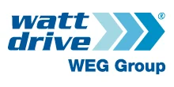

Поставляем оригинальные мотор-редукторы Watt Drive под заказ — оригинал с гарантией производителя. Нужно дешевле — изготовим аналог собственного производства по присоединительным размерам. Цена и срок поставки — по запросу.
Оригинальные мотор-редукторы и редукторы Watt Drive (Watt Eurodrive) — под заказ, с гарантией производителя. Пришлите модель или шильд — сообщим цену и срок поставки. Нужно дешевле — изготовим аналог (см. ниже).
| Серия | Назначение |
|---|---|
| Соосно-цилиндрические | мотор-редукторы |
| Плоские цилиндрические | насадные |
| Коническо-цилиндрические | под углом 90° |
| Червячные | компактные |
| Двигатели в сборе | IEC, в т.ч. компактные модульные |
Точные типоразмеры — по каталогу производителя. Цена и наличие оригинала — по запросу. Не оферта.
Заменяем червячные мотор-редукторы Watt Drive на аналоги собственного производства (серии Ч, 2Ч, МЧ, МЧ2). Узел встаёт на штатное место по присоединительным и габаритным размерам — переходные фланцы и спецвалы изготавливаем по вашим чертежам.

| Заменяем серии Watt Drive | A, F, H, S, K |
|---|---|
| Мощность двигателя | 0.12–200 кВт |
| Передаточное число | 3.77–674 |
| Наш аналог | Редукторы серии ZR (плоские цилиндрические, соосные, конические) |
| Гарантия | 24 месяца |
| Срок | Отгрузка со склада от 3 дней, изготовление от 5 рабочих дней |
Совпадают присоединительные размеры, валы и фланцы — узел встаёт на штатное место.
Вдвое выше среднерыночной.
Отгрузка со склада от 3 дней — не ждать импорт месяцами.
Пришлите фото шильда или модель — подберём аналог за 15 минут.
Подбор по типоразмеру: каждой модели Watt Drive соответствует наш редуктор серии ZR. Точную замену по вашей модели или шильду подтвердит инженер — пришлите шильд или опишите задачу.
| Модель Watt Drive | Наш аналог |
|---|---|
| Плоские цилиндрические мотор-редукторы | |
| A.46AS | ZR 636 |
| A.56AS, A.56C | ZR 646 |
| A.66AS, A.66C | ZR 656, ZR 666 |
| A.76AS, A.76C, A.76D | ZR 676 |
| A.86AS, A.86C, A.86D | ZR 686 |
| F.111AS, F.111C, F.111D, F.111F | ZR 696 |
| F.131AS, F.131C, F.131D, F.131F | ZR 6106 |
| F.137A, F.137C, F.137D | ZR 6126, ZR 6156 |
| Соосные мотор-редукторы | |
| H.41E, H.51E, H.40AS, H.50AS, H.50C | ZR 939 |
| H.60E, H.55A, H.60AS, H.55C, H.60C | ZR 949 |
| H.70E, H.65A, H.70AS, H.65C, H.70C, H.70D | ZR 979 |
| H.80E, H.110E, H.80A, H.80C, H.80D | ZR 989 |
| H.85AS, H.85C, H.85D | ZR 999 |
| H.110AS, H.110C, H.110D, H.110F | ZR 9109 |
| H.133AS, H.133C, H.133D, H.133F | ZR 9139 |
| H.136C, H.136D, H.136F | ZR 9149 |
| Конические мотор-редукторы | |
| S..454ABS, K..40A | ZR 838 |
| S..455ABS, K..50A, K..50C | ZR 848 |
| S..506ABS, S..506C, K..60A, K..60C | ZR 858, ZR 868 |
| S..507ABS, S..608AB, S..609AB, S..507C, S..608C, S..609C, K..70A, K..75A, K..77A, K..70C, K..75C, K..77C, K..70D, K..75D, K..77D | ZR 878 |
| K..80A, K..80C, K..80D | ZR 888 |
| K..86A, K..86C, K..86D | ZR 898 |
| K..110A, K..110C, K..110D | ZR 8108 |
| K..136A, K..136C, K..136D | ZR 8128 |
| K..139A, K..139C, K..139D | ZR 8158 |
Оставьте контакты или пришлите модель/шильд — инженер подберёт аналог, рассчитает присоединительные размеры и пришлёт КП.
Получить КПДа, поставляем оригинальные мотор-редукторы и редукторы Watt Drive (Watt Eurodrive) под заказ, с гарантией производителя. Срок поставки зависит от типоразмера и наличия у поставщика — уточняем после получения модели или шильда. Если оригинал нужен срочно или дешевле, предложим аналог нашего производства с отгрузкой от 3 дней.
Аналог — это редуктор нашего производства (серия ZR), повторяющий присоединительные и габаритные размеры Watt Drive. Узел встаёт на штатное место без переделки оборудования: совпадают валы, фланцы и монтажные размеры. При необходимости изготавливаем переходные фланцы и спецвалы по вашим чертежам, а оригинал Watt Drive остаётся доступен под заказ.
Пришлите модель (например, A.66AS, F.131C, H.80E, K..80A) или фото шильда — инженер определит типоразмер, мощность и передаточное число и подберёт точную замену. По таблице подбора каждой модели Watt Drive соответствует наш редуктор серии ZR. Подбор по шильду занимает около 15 минут.
Цена зависит от того, нужен оригинал Watt Drive под заказ или аналог нашего производства, а также от типоразмера и комплектации. Стоимость и срок сообщаем по запросу после уточнения модели или шильда — пришлите данные, и мы подготовим коммерческое предложение. Аналог, как правило, дешевле оригинала.
Габаритный аналог изготавливаем от 3 дней со склада или под заказ. Оригинал Watt Drive поставляем под заказ — срок зависит от модели и наличия, точные сроки сообщим при запросе.
Да, мотор-редукторы рассчитаны на работу с частотным преобразователем. Сообщите требуемый диапазон регулирования оборотов — подберём двигатель и комплектацию.
Передаём паспорт изделия, сертификаты и закрывающие документы — счёт-фактуру или УПД. Работаем по договору; для постоянных и серийных клиентов согласуем индивидуальные условия.
Да. Для производителей оборудования делаем серийные поставки с резервом на складе и фиксированной ценой по договору — приводная часть вашей серии всегда в наличии.
Watt Drive — поставка оригинала и аналог дешевле. Поставляем оригинальные мотор-редукторы Watt Drive под заказ, а при необходимости изготавливаем аналог по присоединительным размерам. Watt Drive купить, Watt Drive редуктор, мотор-редуктор Watt Drive, аналог Watt Drive — пришлите модель или шильд, подберём замену и сообщим цену по запросу.
Оригинальные мотор-редукторы Watt Drive (Watt Eurodrive) поставляем под заказ с гарантией производителя. Когда нужно дешевле и быстрее импорта, изготовим габаритный аналог серии ZR с теми же присоединительными и габаритными размерами, что у Watt Drive, — узел встаёт на штатное место без переделки рамы, валов и фланцев.
Подбор Watt Drive ведём по модели или фото шильда: определяем серию (A — соосные, F — плоские, H — конические, S/K — червячные), типоразмер, передаточное число и мощность двигателя IEC, после чего предлагаем оригинал под заказ или взаимозаменяемый аналог ZR по присоединительным размерам.
| A (соосно-цилиндрические) | аналог ZR соосного типа |
|---|---|
| F (плоские цилиндрические) | аналог ZR плоского типа |
| H (коническо-цилиндрические) | аналог ZR конического типа |
| S / K (червячные) | аналог ZR червячного типа |
| Мощность двигателя | 0,12–200 кВт |
|---|---|
| Двигатели | IEC / совместимость с ПЧ |
| Исполнения | лапы, фланец, полый/сплошной вал |
| Срок аналога ZR | от 3 дней |
| Оригинал Watt Drive | под заказ, срок по запросу |
Мотор-редукторы Watt Drive (Watt Eurodrive) выпускаются в соосно-цилиндрическом, плоском цилиндрическом, коническо-цилиндрическом и червячном исполнениях мощностью от 0,12 до 200 кВт. Оригинальный Watt Drive поставляем под заказ с гарантией производителя: достаточно прислать модель (серии A, F, H, S, K) или фото шильда — определим типоразмер, передаточное число и комплектацию двигателя IEC и подготовим предложение по сроку и цене.
Оригинал Watt Drive выбирают, когда важна заводская комплектация и гарантия производителя, а сроки поставки приемлемы. Аналог нашего производства (серия ZR) выбирают, когда нужно быстрее и дешевле: узел повторяет присоединительные и габаритные размеры Watt Drive и встаёт на штатное место без переделки оборудования. Подробнее об импортозамещении — на странице импортозамещение редукторов, а точную замену по вашей модели подберём в разделе подбор редуктора.
| Типы | соосные, плоские, конические, червячные |
|---|---|
| Поставка | оригинал под заказ + аналог дешевле |
| Цена | по запросу |
| Подбор | по модели и шильду |